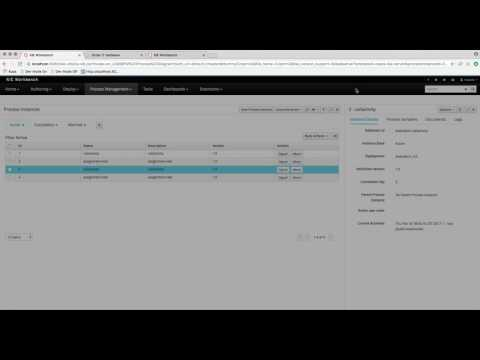

Linked process instance images
In one of the previous posts I described how to retrieve images of process instance from the runtime environment. Now I’d like to share small but helpful improvement in that area. Links between process instances that follow parent child relationship. To put it more in BPMN2 context those processes that use reusable subprocess (call activity).
This very simple process uses call activity to invoke another process instance that is linked to this one. In runtime after “test” activity is invoked there will be two process instances:
- parent process instance that consists of call activity node
- child process instance that was initiated by the call activity
So this is what you could do already, so where is the improvement? It’s this small ‘+’ sign that allows to link between these two process instances. And this does work for both active and completed process instances.
A more complete showcase can be seen below

Short article but nice feature :)

{kind=link}
{kind=link}
{kind=link}